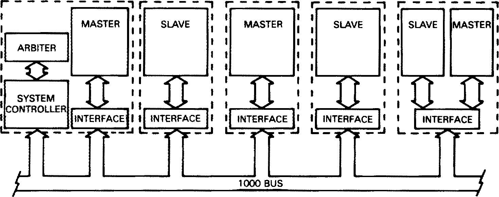
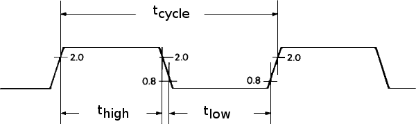
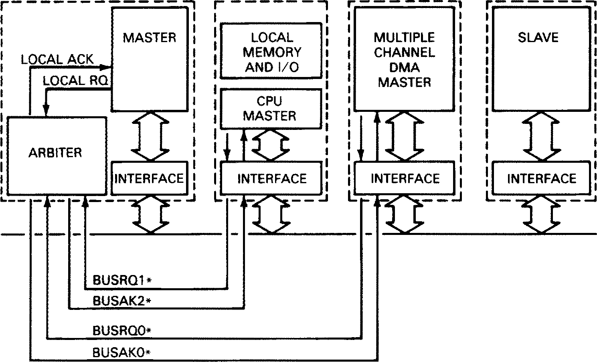
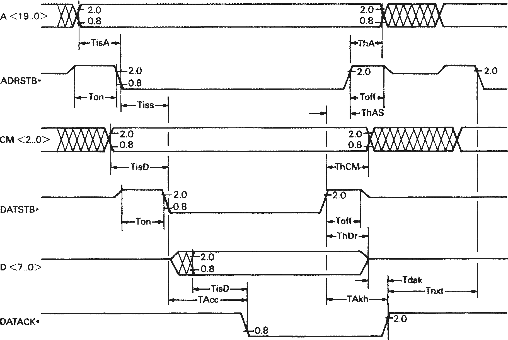
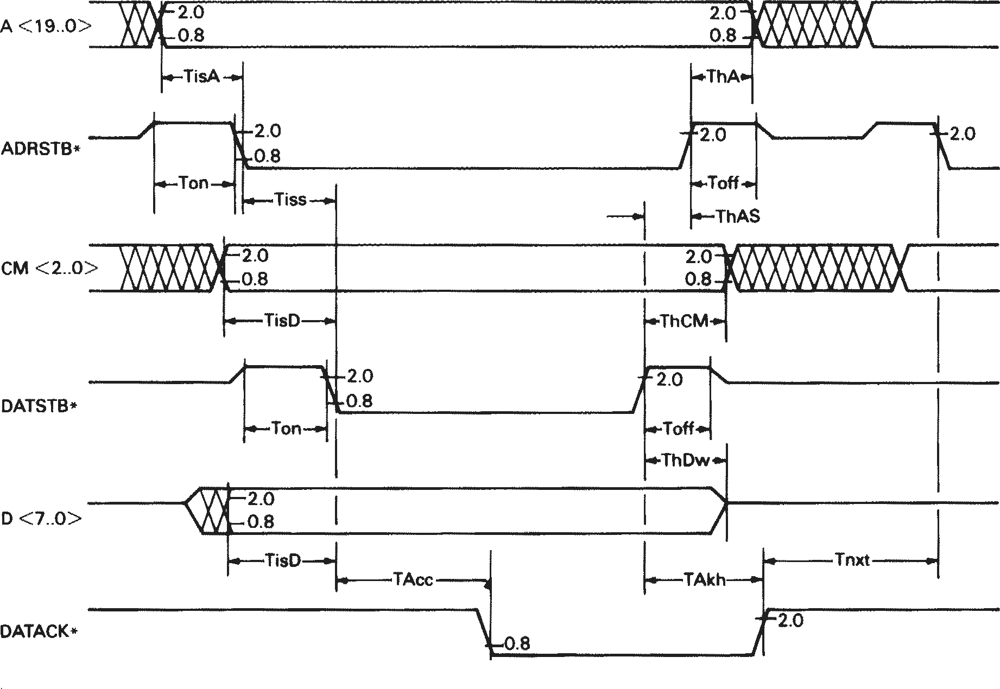
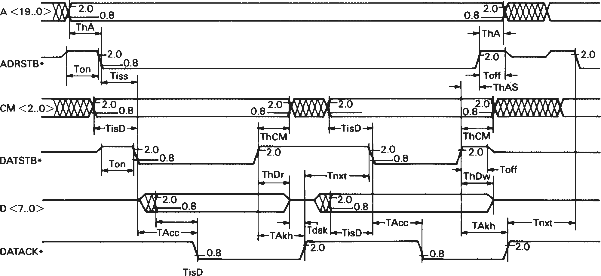
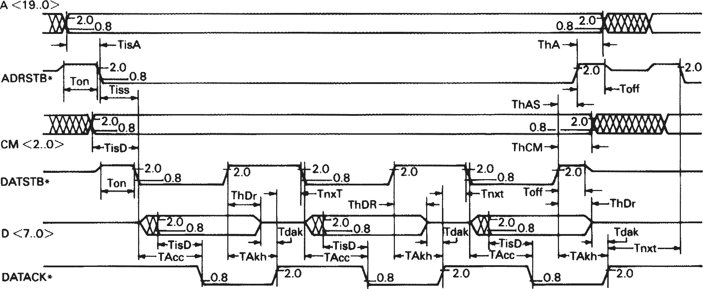
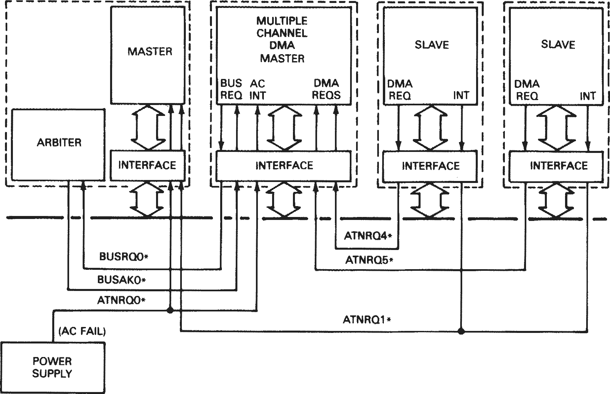
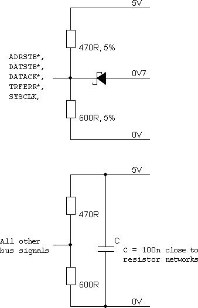

ANSI/IEEE Std 1000-1987
An American National Standard
Sponsor
Technical Committee on Microprocessors and Microcomputers of the IEEE Computer Society
Approved December 10, 1987
IEEE Standards Board
Approved August 11, 1988
American National Standards Institute
ISBN 1-55937-002-5
© Copyright 1988 by
The Institute of Electrical and Electronics Engineers, Inc
345 East 47th Street, New York, NY 10017, USA
No part of this publication may be reproduced in any form, in an electronic retrieval system or otherwise, without the prior written permission of the publisher.
IEEE Standards documents are developed within the Technical Committees of the IEEE Societies and the Standards Coordinating Committees of the IEEE Standards Board. Members of the committees serve voluntarily and without compensation. They are not necessarily members of the Institute. The standards developed within IEEE represent a consensus of the broad expertise on the subject within the Institute as well as those activities outside of IEEE which have expressed an interest in participating in the development of the standard.
Use of an IEEE Standard is wholly voluntary. The existence of an IEEE Standard does not imply that there are no other ways to produce, test, measure, purchase, market, or provide other goods and services related to the scope of the IEEE Standard. Furthermore, the viewpoint expressed at the time a standard is approved and issued is subject to change brought about through developments in the state of the art and comments received from users of the standard. Every IEEE Standard is subjected to review at least once every five years for revision or reaffirmation. When a document is more than five years old, and has not been reaffirmed, it is reasonable to conclude that its contents, although still of some value, do not wholly reflect the present state of the art. Users are cautioned to check to determine that they have the latest edition of any IEEE Standard.
Comments for revision of IEEE Standards are welcome from any interested party, regardless of membership affiliation with IEEE. Suggestions for changes in documents should be in the form of a proposed change of text, together with appropriate supporting comments.
Interpretations: Occasionally questions may arise regarding the meaning of portions of standards as they relate to specific applications. When the need for interpretations is brought to the attention of IEEE, the Institute will initiate action to prepare appropriate responses. Since IEEE Standards represent a consensus of all concerned interests, it is important to ensure that any interpretation has also received the concurrence of a balance of interests. For this reason IEEE and the members of its technical committees are not able to provide an instant response to interpretation requests except in those cases where the matter has previously received formal consideration.
Comments on standards and requests for interpretations should be addressed to:
Secretary, IEEE Standards Board
345 East 47th Street
New York, NY 10017
USA
IEEE Standards documents are adopted by the Institute of Electrical and Electronics Engineers without regard to whether their adoption may involve patents on articles, materials, or processes. Such adoption does not assume any liability to any patent owner, nor does it assume any obligation whatever to parties adopting the standards documents.
(This Foreword is not a part of ANSI/IEEE Std 1000-1987, IEEE Standard for an 8-Bit Backplane Interface: STEbus.)
The initial concept for STEbus was to produce a European version of the STD Bus using the Eurocard form factor with the DIN41612 connector. From that concept STE became known as STD-European.
When IEEE formed Working Group P1000 the brief specified a Standard 8-Bit Backplane Interface. At the inaugural meeting of Working Group P1000 it quickly became apparent that the opportunity was there to create a completely new, modern, high-performance 8-Bit bus, and all ideas of merely repinning the old STD Bus were rapidly forgotten.
At the initial meeting of P1000 it was decided that the bus should be a part of the same family as VMEbus and Futurebus and as such should be an asynchronous bus with multimaster capability. Today it is often referred to as the baby brother of VMEbus. Unlike VMEbus though it was to be processor and manufacturer independent. This has proven to be an excellent decision as today there are many varied types of processor available on STEbus, from microcontrollers such as 8031, through Intel’s 8085, 8088, and 80188; National Semiconductor’s 32008 and 32016; Motorola’s 6809, 68000, and 68008; Zilog’s Z80 and Z280; Hitachi’s 64180, and the Inmos Transputer with the promise of more to come.
A presentation was made to a packed audience at the IEE in London, England in early 1983. It met with critical acclaim. The first article about STEbus was also published about this time in an international magazine (EDN May 26, 1983).
Work continued internationally and in late 1984 Draft D3.1 was produced. This draft eradicated the daisy-chain bus request mechanism of D2.0 in favor of a simple solution that allowed position independence of cards in the rack.
This was the first firm specification and encouraged more manufacturers to look at the bus seriously. Among them were BICC-Vero, a major manufacturer of Eurocard enclosures and backplanes, and British Telecom, the UK's Telephone Utility. Market ground zero was early 1985 and since this time the number of manufacturers has continued to grow from 18 companies in Spring 1986 to more than 30 in mid-1987, with over 700 products available.
Much credit and praise is due Tim Elsmore who first conceived the idea for STEbus during his employment with GMT Electronic Systems Ltd. Paul Borrill was instrumental in negotiating with IEEE the formation of Working Group P1000 and Bill Shields was appointed Chairman.
This standard was prepared by Working Group P1000 of the Microprocessor Standards Committee. At the time of approval of this standard the membership was as follows:
| W. Shields, Chair | ||
P. Borrill |
S. Jenkins |
T. Sharp |
The following persons were on the balloting committee that approved this document for submission to the IEEE Standards Board:
A. Allison |
D. Gustavsson |
D. Ogden |
When the IEEE Standards Board approved this standard on December 10, 1987, it had the following membership:
Donald C. Fleckenstein, Chair
Marco W. Migliaro, Vice Chair
Andrew G. Salem, Secretary
James H. Beall |
Edward Lohse |
*Member emeritus
1. General 1.1 Scope 1.2 Features 1.3 Objects 1.4 Definitions 1.5 Logical and Electrical State Relationships 2. Functional Description 2.1 System Controller 2.2 Arbiter 2.3 Masters 2.4 Slaves 3. Signal Lines 3.1 Information Lines 3.2 Synchronization Lines 3.3 Attention Request Lines (ATNRQ[7..0]*) 3.4 Bus Allocation Lines 3.5 Utility Lines 3.6 IEEE Std 1000 Bus Connector Pin Allocations 4. Arbitration 4.1 Arbitration Algorithm 4.2 Bus Requests 4.3 Bus Grants 4.4 Control Allocation Sequence 5. Data Transfer Protocol 5.1 Read Sequence 5.2 Write Sequence 5.3 Read-Modify-Write Sequence 5.4 Vector-Fetch 5.5 Burst Transfer Sequences 5.6 General Data Transfer Rules 5.7 Transfer Error 5.8 System Time-Out 6. Inter-Board Signaling 6.1 Overview 6.2 Attention Request Lines (ATNRQ[7..0]*) 6.3 Response to Interrupt Attention Requests 6.4 Excluded Utilizations of Attention Request Lines 7. Electrical Specifications 7.1 Power Supplies 7.2 Board-Electrical Requirements 7.3 Driver and Receiver DC Characteristics 7.4 Signal DC Characteristics 7.5 Signal AC Characteristics 7.6 Backplane AC Specifications 7.7 Termination Networks Annex A (informative) Applicable IEC Specifications Annex B (informative) Recommended Bus Termination Arrangement
IEEE 1101-1: MECHANICAL CORE SPECIFICATIONS FOR MICROCOMPUTERS
The overall level of performance that may be achieved by any computer system is determined, in large part, by the system bus that is used to effect communication between the various system elements. System performance characteristics, measured in terms of speed, reliability, suitability to a variety of purposes, and adaptability to changing technology are ultimately dependent on the particular bus structure that is used and its associated protocols.
This standard defines the IEEE Std 1000 Bus, which may be used to implement general purpose, high-performance 8-bit microcomputer systems. Such a system may be used in a stand-alone configuration, or in larger multiple-bus architectures, as a private (or secondary) bus or a high-speed I/O channel. This standard is applicable to those systems and system elements with the common commercial designation STE Bus. It is intended for those users who plan to evaluate, implement, or design various system elements that are compatible with the IEEE 1000 Std Bus system structure.
The physical attributes and method of interconnect utilized by boards and modules conforming to this standard are derived from several International Electrotechnical Commission (IEC) standards. These standards, when implemented jointly in a systems environment, result in a mechanical configuration commonly referred to as Eurocard. Appendix B lists such applicable standards which, where referenced, are considered as if incorporated with this standard. In particular the connector used by IEEE Std 1000 Bus boards is a 64-pin male connector utilizing the outside two rows (designated a and c rows), specified in IEC Publication 603-2,1 and the mating female connector is used on IEEE Std 1000 Bus backplanes. The recommended size for IEEE Std 1000 Bus boards is 100 mm × 160 mm (3.937 in × 6.299 in), commonly referred to as a single height standard depth Eurocard.
The IEEE Std 1000 Bus structure is based on the master-slave concept in which a master, having gained control of the bus, may address and command slaves. Masters and slaves communicate with each other by use of an asynchronous interlocked handshake protocol. This technique allows for the construction of computer systems that incorporate devices of widely varying speeds. Multiple masters may be implemented within a single system.
IEC publications are available from the Sales Department, American National Standards Institute, 1430 Broadway, New York, NY 10018.
Two independent address spaces are supported: memory and I/O. Memory transactions reference a 1 megabyte physical address space, while I/O transactions reference a 4 kilobyte physical address space. System integrity during all such transactions is enhanced by provision of a transfer error signal.
Provision is made for interboard condition alerts such as interrupt requests, DMA requests, system-specific error conditions, or other specialized status conditions. Within this scheme eight prioritized attention request levels, each with vectored response capability, are available for user assignation.
This standard deals only with those characteristics that must be specified so as to ensure the successful design and implementation of compatible boards and systems. Issues relating to individual design specifications, and performance or safety requirements are not addressed.
The fundamental features offered by IEEE Std 1000 Bus are as follows:
8-bit Data Field Width
1 Megabyte Memory Address Range
4 Kilobyte I/O Address Range
Asynchronous Data Transfer
Transfer Error Signal
Multiple Masters
Eight Attention Request Lines
IEC 603-2 Connector
Single or Double Eurocard Boards and Modules
5 V, ± 12 V and Standby Power Supply Distribution
Total Position Independence of Boards and Modules in Backplane
Total Inter-Board Compatibility
Total Central Processing Unit (CPU) Generic Device Family Independence
Potential 5 Megabyte per Second Data Transfers
This standard is intended to
Define a general purpose microcomputer board interface.
Specify those device-independent electrical, mechanical, and functional interface parameters that must be met so as to effect unambiguous communication between system elements and to effect physical compatibility.
Specify the terminology and definitions related to the specification.
Enable the interconnection of a wide variety of independently manufactured boards within a single functional system.
Define a standard that places the minimum number of restrictions on the performance characteristics of boards within a conforming system.
Allow microcomputer system users of relatively modest experience to assemble modularly expandable computer systems with a high probability of Success.
The following general definitions apply throughout this standard. Additional detailed definitions are given where appropriate.
Throughout this standard bus request and acknowledge signals and attention request signals are sometimes referred to as BUSRQn*, BUSAKn*, and ATNRQn* respectively. Such general references are equivalent to specific references BUSRQ0* or BUSRQ1* etc.
Throughout this standard signals on a particular bus are referred to collectively using the form A [19..0]. This notation should be taken as an abbreviation of all of the address bus signals from A19 through to A0 inclusive.
In addition to the address bus signals, the notation is also used for the data lines (for example, D[7..0]), the common lines (for example, CM[2..0]), the attention request lines (for example, ATNRQ[7..0]*), the bus request lines (for example, BUSRQ[1..0]*) and the bus acknowledge lines (for example, BUSAK[1..0]*).
Throughout this standard the term asserted is used to indicate the logical true state of the particular signal referenced.
The corresponding term negated, however, is not used because it comprises a potentially ambiguous representation when describing signals, which may be low or high true.
All signals that are low in their asserted state are designated by a star (asterisk), which follows the signal name (for example, ADRSTB*). The correlation between the terms true:false, high:low, and asserted:released is demonstrated in the following table, utilizing the signals ADRSTB* and CM[2..0] as an example.
| Function | Electrical | Logical | State |
|---|---|---|---|
| CM[2..0] | High | 1 True | Active, asserted |
| Low | 0 False | Active, released | |
| High Z | — | Inactive | |
| ADRSTB* | Low | 1 True | Active, asserted |
| High | 0 False | Active, released | |
| High Z | — | Inactive |
This section describes the functional elements of IEEE Std 1000 Bus interface. They are
System Controller
Arbiter
Masters
Slaves
An individual board attached to IEEE Std 1000 Bus backplane may consist of one or more of these elements.
Within any IEEE Std 1000 Bus system there shall be one, and only one, system controller. The system controller provides essential facilities for the proper operation of IEEE Std 1000 Bus systems. The system controller may be combined on a board with a master.
The system controller shall provide as a minimum the following requirements:
SYSCLK. A general-purpose clock signal in accordance with the specifications detailed in Section 3 of this standard.
SYSRST*. An initial power-on system reset signal in accordance with the specifications detailed in Section 3 of this standard.
TFRERR*. A transfer error signal in accordance with the specifications detailed in Section 3 of this standard.
All bus allocation grants shall be provided by the arbiter in accordance with the protocol described in Section 4 of this standard. There shall be one, and only one, arbiter within any IEEE Std 1000 Bus system. The arbiter may be combined on a board with a master.
A master is a board that is capable of controlling the transfer of data on the bus, by means of the protocols defined in Sections 4 and 5 of this standard. A master may contain a central processing unit (CPU) or logic necessary to transfer data over the bus (for example, DMA controller).
All masters must request allocation of IEEE Std 1000 Bus from the arbiter before they can control data transfers except in the special case of a default master.
Default master. A master that is allocated control of the bus by the arbiter whenever the bus is not in use by another master. A default master is necessarily combined with the arbiter on the same board and has the lowest priority for bus allocation. There can be only one default master within a IEEE Std 1000 Bus system, though a IEEE Std 1000 Bus system need not include a default master.
All other masters (termed potential masters) request allocation of bus control from the arbiter. This request shall be made by asserting one of the two bus request (BUSRQn*) lines, or in the case of a master that is on the same board as the arbiter but is not configured as a default master, by asserting a third bus request line that is private to that board.
Multiple masters may exist within a system. The master's priority for bus control allocation and the means by which such allocation is accomplished are as described in Section 4.
Masters may retain control for a period of time constrained only by the specific system requirements. Two modes of operation may be used by masters.
Release-When-Done. The master retains control of the bus until all desired transfers have been accomplished.
Release-On-Request. The master retains control of the bus indefinitely, relinquishing control when it determines that another master requires allocation of the bus. This determination may be made by several methods including receipt of an attention request signal, hardware polling, or by detection of a BUSRQn signal becoming active.
NOTE — By definition a default master always operates in release-on-request mode.
Boards that are capable of being controlled over the IEEE Std 1000 Bus are designated slaves. Slaves decode the address lines and act upon the command provided by the current master. A slave may be combined with other functional elements on a board (for example, a board that contains both a master and memory that is accessible by other masters within the system).
Figure 1 shows one possible system configuration that utilizes a variety of boards in combination.

This section provides specific definitions for all signal lines that are part of the IEEE Std 1000 Bus. Each of these signals has been assigned to one of five functional groups. These groups are
Information Lines
Address Lines
Data Lines
Command Lines
Synchronization Lines
Attention Request Lines
Bus Allocation Lines
Utility Lines
These unidirectional lines specify the address of the referenced memory or I/O location or, during a vector fetch response to an attention request, the level of the request being acknowledged. The most significant bit is A19 and A0 is the least significant.
The following table details the usage of the address lines during various types of operations.
These eight bidirectional lines carry information between masters and slaves. The most significant bit is D7 and D0 is the least significant.
These signals are used by the current master to convey coded data to the slave describing the type of the current data transfer according to Table 1.
Command codes marked reserved shall not be used, and IEEE Std 1000 boards shall not respond to or utilize these codes for any purpose so as to be considered in compliance with this standard. This is to guarantee compatibility with boards that may be designed to conform to future revisions of this standard.
| Operation | Valid Lines | Total Addressed Range |
|---|---|---|
| Memory read or write | A[19..0] | 1048576 bytes |
| I/O read or write | A[11..0] | 4096 locations |
| Vector-fetch | A[2..0] | 8 levels |
| CM2 | CM1 | CM0 | Transfer |
|---|---|---|---|
| 0 | 0 | 0 | Reserved |
| 0 | 0 | 1 | Reserved |
| 0 | 1 | 0 | Reserved |
| 0 | 1 | 1 | Vector-fetch |
| 1 | 0 | 0 | I/O Write |
| 1 | 0 | 1 | I/O Read |
| 1 | 1 | 0 | Memory write |
| 1 | 1 | 1 | Memory read |
The following signals are classified as synchronization lines:
This signal indicates the presence of valid data on the address lines.
This signal indicates the presence of valid data on the command lines CM[2..0]. During a read, or vector-fetch transfer, this signal indicates that the addressed slave may place data on the data lines. During a write transfer this signal indicates the presence of valid data on the data lines.
This signal is used to indicate to the master that the command has been performed: that data have been placed on, or accepted from, the data lines.
This signal may be asserted by any board to indicate an error during the current transfer. Specific timing requirements for this signal are detailed in Section 5 of this standard.
These signals are configured for indicating user-specific events when a IEEE Std 1000 Bus system is commissioned.
Such events may include, but are not limited to, interrupt requests, DMA requests, or notification of conditions, which exist either at the board or system level (for example, failure). Eight attention request lines are available. Three optional response protocols are described in Section 6. of this standard for the use of attention request lines as traditional interrupts.
These signals may be used by any board to request the attention of other boards within IEEE Std 1000 Bus systems.
Any board within the system may be connected to any of the eight attention request lines. Multiple boards may be connected to the same attention request line allowing for the broadcast of events to one or more boards within a system. There is an implied priority with ATNRQ0* having highest priority and ATNRQ7* having the lowest.
The bus allocation lines are:
| Signal | Function |
|---|---|
| ADRSTB* | Address strobe |
| DATSTB* | Data strobe |
| DATACK* | Data transfer acknowledge |
| TFRERR* | Transfer error |
These signals may be asserted by any potential master that desires allocation of the IEEE Std 1000 Bus. In systems utilizing prioritized arbitration, BUSRQ0* shall have priority over BUSRQ1*.
These signals are used by the arbiter to indicate to a master requesting bus allocation that it may take control of the bus. BUSAK1* indicates a grant to the master requesting by way of BUSRQ1*, and BUSAK0* indicates a grant to the master requesting by way of BUSRQ0*.
The following signals are classified as utility lines:
The system clock is a periodic signal of constant frequency that may be used as a generalized facility by masters or slaves. The system clock is independent of the protocol of any other bus signals, and is provided by the system controller. Figure 2 contains timing waveforms for SYSCLK.
The system reset signal is used to place the system in a known initial state. While SYSRST* is active all boards shall inhibit any access to the system bus. SYSRST* may be driven by any board. It is recommended that during a powerup sequence, any board capable of performing on-board diagnostic self-tests hold SYSRST* active until the successful completion of such tests.
The system controller shall provide an initial power-on system reset signal that is not <200 ms and not >500 ms in duration, measured from the point at which the +5 V dc supply reaches its designated minimum specification (see Section 7). The system controller also shall assert SYSRST* at any time that the system supply falls below its minimum specified tolerance, and shall continue to assert it for the entire period during which the supply is out of tolerance. The rise time of this signal shall not exceed 100 ns (10%-90%).
A recommended power-fail protocol, for implementation of systems where an early indication of primary power supply failure is available, is provided in Section 7.
BUSRQ[1..0]* Bus request lines
BUSAK[1..0]* Bus acknowledge lines
SYSCLK System clock
SYSRST* System reset

tcycle = 62.5 ± 1 ns (16 MHz) thigh = 31.25 ± 10 ns tlow = 31.25 ± 10 ns
The IEEE Std 1000 Bus connector pair shall be C064 from IEC 603-2 (1980). The male connector shall be on the board and the female connector shall be on the backplane.
The allocation of the signals described in this standard to pins on the IEEE Std 1000 Bus connector are in Fig 3.
The backplane tracking arrangement shown is recommended so as to allow the signal 0 V return traces to provide guard track protection between strobes and signal sets.
| Pin | Row | ||
|---|---|---|---|
| a |
b |
c |
|
| 1 | GND | GND | |
| 2 | +5V | +5V | |
| 3 | D0 | D1 | |
| 4 | D2 | D3 | |
| 5 | D4 | D5 | |
| 6 | D6 | D7 | |
| 7 | A0 | GND | |
| 8 | A2 | A1 | |
| 9 | A4 | A3 | |
| 10 | A6 | A5 | |
| 11 | A8 | A7 | |
| 12 | A10 | A9 | |
| 13 | A12 | A11 | |
| 14 | A14 | A13 | |
| 15 | A16 | A15 | |
| 16 | A18 | A17 | |
| 17 | CM0 | A19 | |
| 18 | CM2 | CM1 | |
| 19 | ADRSTB* | GND | |
| 20 | DATACK* | DATSTB* | |
| 21 | TFRERR* | GND | |
| 22 | ATNRQ0* | SYSRST* | |
| 23 | ATNRQ2* | ATNRQ1* | |
| 24 | ATNRQ4* | ATNRQ3* | |
| 25 | ATNRQ6* | ATNRQ5* | |
| 26 | GND | ATNRQ7* | |
| 27 | BUSRQ0* | BUSRQ1* | |
| 28 | BUSAK0* | BUSAK1* | |
| 29 | SYSCLK | VSTBY | |
| 30 | -12V | +12V | |
| 31 | +5V | +5V | |
| 32 | GND | GND | |
This section defines the protocol that is used by IEEE Std 1000 Bus masters to gain control of the IEEE Std 1000 Bus.
The following signals are used to effect allocation of bus control within IEEE Std 1000 Bus systems:
BUSRQ [1..0]*
BUSAK [1..0]*
On power-up, or following a system reset, the arbiter shall have control of the bus. All masters (except default masters) must request and receive a control allocation grant from the arbiter prior to controlling the bus. Only the arbiter may effect a change in allocation of bus control within an IEEE Std 1000 Bus system.
Any algorithm may be used by the arbiter to determine which of the bus request levels will be granted when the current master releases the bus, although, by convention, the BUSRQ0*/BUSAK0*, request/grant pair have priority over BUSRQ1*/BUSAK1*. The arbiter may award preference to one requesting level on a priority basis, a round-robin basis, or by means of any other algorithm implementable within the control transfer protocol.
A Bus request may be initiated by any master within an IEEE Std 1000 Bus system at any time by asserting one of the BUSRQ* lines. Bus requests are level-triggered, meaning that a requesting condition is indicated by the relative voltage level present on a BUSRQn line rather than by the active transition from one state to another.
A master, having asserted one of the BUSRQn lines, shall continue to assert it for the entire period during which it desires to control the bus.
NOTE — Multiple masters may be connected to a single BUSRQn line only when it can be assured that more than one master cannot request the bus at the same time, on the same requesting level.
BUSAK0* or BUSAK1* are asserted by the arbiter in response to the corresponding requests, BUSRQ0* and BUSRQ1*. The arbiter shall not assert either of these grant lines in the absence of a corresponding bus request. In addition, the arbiter shall not assert both bus acknowledge lines simultaneously under any circumstances.
A master asserting a bus request line and detecting the corresponding bus acknowledge line asserted may assume control of the bus. The arbiter, having asserted a bus acknowledge line, shall continue to assert it for the entire period during which the current master continues to assert the corresponding bus request line.
Figure 4 shows the handshake-signal flow during an allocation of bus control. The sequence of events for all allocations of bus control shall conform to the following description:
A master may request allocation of the IEEE Std 1000 Bus at any time by asserting one of the BUSRQ* lines except that a master may not assert BUSRQn* until the corresponding BUSAKn* has been released from a previous cycle.
The arbiter, upon detecting BUSRQn* active, and having first assured that the bus is available, shall assert BUSAKn indicating that the bus is available for use by the requesting master. The arbiter shall not assert BUSAKn* in the absence of a corresponding BUSRQn*. The bus is available for arbitration if the arbiter is not issuing a bus grant to any master, either by asserting BUSAKn* or by granting to the bus to its own on-board master (if one is present).
The requesting master, upon detecting that BUSAKn* has been made active, shall assume control of the bus.
Upon completing the desired data transfer sequences, the current master shall cease driving all bus lines and shall then release BUSRQn*.
The arbiter, upon detecting that the BUSRQn* is no longer asserted, shall release BUSAKn*.
| Arbiter | Master |
|---|---|
| Wait for BUSAKn* Released Assert BUSRQn* |
|
| Assert BUSAKn* when bus is available | |
Decode BUSAKn* and BUSRQn* Asserted Enable bus drivers and assume bus control. Disable bus drivers Release BUSRQn* |
|
| Release BUSAKn* |

This section defines the protocol and timing requirements necessary to effect data transfer sequences across the IEEE Std 1000 Bus. All data are transferred as single bytes using an asynchronous interlocked handshake. The asynchronous nature of the protocol allows communication between masters and slaves of widely differing speeds, and is essentially self-adaptive to changing system configurations.
Indivisible read-modify-write sequences are accommodated within the protocol, allowing synchronization of tasks in a multiple processor system by use of lock variables.
A high-speed burst mode of data transfer is also specified, allowing for rapid movement of contiguous data blocks between boards.
Figure 6 illustrates the various types of sequences accommodated by the IEEE Std 1000 Bus data transfer protocol.
The signals used for data transfer sequences are
Throughout this section the word master implies current master, that is, it is assumed that the master discussed has been allocated control of the IEEE Std 1000 Bus by means of the protocol described in Section 4 of this standard.
| Signal | Source |
|---|---|
| A[19..0] | Master |
| D[7..0] | Master during write, slave during read, and vector-fetch |
| CM[2..0] | Master |
| ADRSTB* | Master |
| DATSTB* | Master |
| DATACK* | Slave |
| TFRERR* | Any board |
| |||||||||||||||||||||||||
|
|||||||||||||||||||||||||
| |||||||||||||||||||||||||
Data transfers from slave to master are designated read sequences. Figure 8 illustrates the handshake-signal flow, and Fig 10 specifies the signal timing parameters for a read sequence. Read sequences shall conform to the following description:
The master places the address of the targeted memory or I/O location on
the address lines.
NOTE — The master may assert the appropriate command code at this time.
After a setup time, during which the address lines become valid, and having ensured that DATACK* is released from the previous cycle, the master shall assert ADRSTB*.
The master shall activate the command lines, CM[2..0], to indicate the type of transfer.
| CM2 | CM1 | CM0 | Transfer |
|---|---|---|---|
| 1 | 0 | 1 | I/O Read |
| 1 | 1 | 1 | Memory read |
After a setup time during which the command lines become valid, the master shall assert DATSTB* indicating the presence of valid data on the command lines, and that it is ready to accept data.
The addressed slave shall enable its data bus drivers, placing requested data on the data lines.
After a setup time, during which the data lines become valid, the addressed slave shall assert DATACK* indicating that the data is available.
In response to DATACK* the master shall accept the data and shall release DATSTB* indicating to the slave that it must remove the data from the data lines.
Upon detecting either DATSTB* or ADRSTB* released, the slave disables its data bus drivers and releases DATACK* indicating that the sequence is complete.
| Master | Slave |
|---|---|
Activate Address Lines after TisA |
|
Activate Command Lines |
Decode Address |
Decode Command Activate Data lines |
|
Accept Data |
|
Release Address Lines |
Disable Data Bus Drivers |
Data transfers from masters to slaves are designated write sequences. Figure 9 illustrates the handshake signal flow, and Fig 11 specifies the signal timing parameters for a write sequence. Write sequences shall conform to the following description:
The master places the address of the targeted memory or I/O location on
the address lines.
NOTE —
The master may assert the appropriate command code at this time.
After a setup time, during which the address lines become valid, and having ensured DATACK* is released from the previous cycle, the master shall assert ADRSTB*.
The master shall activate the command lines, CM[2..0], to indicate the type of transfer, and shall place the data to be transferred on the data lines.
After a setup time, during which the data lines and the command lines become valid, the master shall assert DATSTB* indicating the presence of valid data on the data and command lines.
The addressed slave shall accept the data and shall assert DATACK* to indicate that the transfer may be terminated.
| CM2 | CM1 | CM0 | Transfer |
|---|---|---|---|
| 1 | 0 | 0 | I/O Write |
| 1 | 1 | 0 | Memory write |
In response to DATACK* the master shall release ADRSTB* and DATSTB*.
Upon detecting either DATSTB* or ADRSTB* released, the slave shall release DATACK* indicating that the sequence is complete.
| Master | Slave |
|---|---|
Activate Address Lines after TisA Wait for DATACK* Released Assert ADRSTB* |
|
Activate Command Lines Activate Data Lines Assert DATSTB* after TisD |
Decode Address |
Decode Command Accept Data Assert DATACK* |
|
Release ADRSTB* and DATSTB* |
|
Release Address Lines Release Command and Data Lines |
Release DATACK* |
| Master | Slave |
|---|---|
Activate Address Lines after TisA Wait for DATACK* Released Assert ADRSTB* |
|
Activate Command Lines Assert DATSTB* after TisD |
Decode Address |
Decode Command Activate Data lines Assert DATACK* after TisD |
|
Accept Data Release DATSTB* |
|
Modify Data |
Disable Data Bus Drivers Release DATACK* |
Change CM0 state Activate Data Lines after TisD Wait for DATACK* Released Assert DATSTB* |
|
Decode Command Accept Data Assert DATACK* |
|
Release ADRSTB* and DATSTB* |
|
Release Address Lines Release Command and Data Lines |
Release DATACK* |
Sequences during which the data is transferred to the master, operated on by the master, and subsequently transferred from the master to the same address, in a single indivisible sequence are designated read-modify-write sequences.
Figure 9 illustrates the handshake signal flow, and Fig 12 specifies the signal timing parameters for a read-modify-write sequence. Read-modify-write sequences shall conform to the following description:
The master places the address of the targeted memory or I/O location on
the address lines.
NOTE —
The master may assert the appropriate command code at this time.
After a setup time, during which the address lines become valid, and having ensured DATACK* is released from the previous cycle, the master shall assert ADRSTB*.
The master shall activate the command lines, CM[2..0], to indicate the type of transfer.
After a setup time during which the command lines become valid the master shall assert DATSTB* indicating the presence of valid data on the command lines, and that it is ready to accept data.
The addressed slave shall enable its data bus drivers, placing the requested data on the data lines. A slave shall not respond to DATSTB* unless ADRSTB* is asserted.
After setup time, during which the data lines become valid, the addressed slave shall assert DATACK* indicating that the data is available.
| CM2 | CM1 | CM0 | Transfer |
|---|---|---|---|
| 1 | 0 | 1 | I/O Read |
| 1 | 1 | 1 | Memory read |
In response to DATACK* the master shall accept the data and shall release DATSTB*, indicating to the slave that it must remove the data from the data lines.
Upon detecting DATSTB* released, the slave disables its data bus drivers and releases DATACK* indicating that the read transfer is complete.
After operating on the data and detecting DATACK* released, the master shall activate command line CM0 (logic 0), indicating a write command, and shall place the modified data to be transferred on the data lines.
After a setup time, during which the data lines and command line CM0 become valid, the master shall assert DATSTB* indicating the presence of valid data on the data and command lines.
The addressed slave shall accept the data and shall assert DATACK* to indicate that the transfer may be terminated.
In response to DATACK* the master shall release ADRSTB* and DATSTB*.
Upon detecting either DATSTB* or ADRSTB* released, the slave shall release DATACK* indicating that the sequence is complete.



In responding to an attention request as described in Section 6. of this standard, a master may perform a vector-fetch sequence. The protocol and signal timing parameters of a vector-fetch sequence are identical to those of a read sequence except that only address lines A[2..0] are valid and the command code is:
| CM2 | CM1 | CM0 | Transfer |
|---|---|---|---|
| 0 | 1 | 1 | Vector-fetch |
A special form of either read, write, or vector-fetch sequence may be supported by IEEE Std 1000 Bus boards. This is referred to as burst transfer mode. During a burst data transfer the operation proceeds according to the previously described protocols except that multiple DATSTB* — DATACK* handshakes occur between the master and the addressed slave. ADRSTB* and all used address lines shall remain stable throughout the sequence. The command lines shall remain stable throughout the sequence.
A slave board may be configured to participate in burst-mode transfer sequences by including logic that autoincrements or auto-decrements the onboard address on active edges of DATSTB*, or by use of a first-in, first-out (FIFO) register array.
Figure 13 specifies the signal timing parameters for burst-mode transfer sequences.

A master shall not assert DATSTB* while ADRSTB* is released.
A slave shall not respond to DATSTB* while ADRSTB* is released.
A slave shall not assert TFRERR* and DATACK* simultaneously.
All address lines used in any transfer sequence shall be valid when ADRSTB* is asserted, and shall remain valid until ADRSTB* is released.
All command lines shall be valid when DATSTB* is asserted, and shall remain valid until DATSTB* is released.
During read transfers all data lines shall be valid when DATACK* is asserted, and shall remain valid until DATSTB* is released.
During write transfers all data lines shall be valid when DATSTB* is asserted, and shall remain valid until DATSTB* is released.
A slave that determines the current address to be within its range but locally detects a problem with the transfer, such as an illegal access or a parity fail, may assert TFRERR* instead of DATACK*. TFRERR* may be asserted at any time that ADRSTB* and DATSTB* are both active and shall conform to the same signal timing protocol and parameters as DATACK* would otherwise have done. For example, the master shall terminate the transfer by releasing DATSTB* and ADRSTB*. The slave shall release TFRERR* and the master may initiate whatever system-specific action may be possible to recover from the exception.
A deadman timer shall be provided to guard against system lockup since there exists a finite probability that a slave will not respond when utilizing an asynchronous protocol (such as when addressing a nonexistent memory location or as the result of a metastable condition). This timer shall be present on the system controller, and may be additionally implemented on any other board.
The system controller shall monitor all bus transfer sequences and shall assert TFRERR* at any time that the period from an active transition of DATSTB* to the subsequent active transition of DATACK* exceeds a designated maximum (this period should be user selectable, and its range shall include at least one time-out period that ≤8 μs). In such an event the master shall terminate the transfer by releasing DATSTB*. The system controller shall release TFRERR* and the master may initiate whatever system-specific action may be possible to recover from this exception.
| Parameter | Description | Min / ns | Max / ns |
|---|---|---|---|
| TisA | Address set-up time prior to ADRSTB* | 35 | — |
| Ton | Duration of active, released state prior to transition to asserted state | 0 | — |
| TisD | Data and CM[2..0] set-up time prior qualifying state. NOTE (2) | 35 | — |
| Tiss | Time between ADRSTB* asserted and DATSTB* asserted | 0 | — |
| TAcc | Slave access time DATSTB* asserted | — | NOTE (3) |
| ThDw | Data hold time after DATSTB* released (write) | 0 | 45 |
| ThCM | Command hold time after DATSTB* released | 0 | — |
| ThDr | Data hold time after DATSTB*released (read) | 0 | — |
| Tdak | Delay between data lines inactive to DATACK* released | -20 | — |
| ThAS | ADRSTB* hold time after DATSTB* released | 0 | — |
| ThA | Address hold time after ADRSTB* released | 0 | — |
| Toff | Hold time of active, released state | 0 | — |
| Tnxt | Delay between DATACK* released and ADRSTB* asserted to next cycle | 0 | — |
| TAkh | DATACK* hold time after DATSTB* released | 0 | 120 |
NOTES:
For high to low transitions timings are from/to low threshold. For low to high transitions timings are from/to high threshold.
Valid data is qualified by DATSTB* in write sequences and by DATACK* in read and vector fetch sequences.
Maximum value specified by manufacturer. See 5.8.
To enable IEEE Std 1000 Bus systems to perform optimally in real-time applications, to respond effectively to error conditions, and to support techniques for rapid movement of blocks of data, a set of eight attention request lines are provided. These lines allow signaling between boards that is essentially unrelated to, and independent of the data transfer protocol, otherwise used to effect inter-board communications.
The attention request lines are provided to allow a board to alert one or more other boards of the occurrence of some event that requires a change in flow or context of the current system activity. The event may be a need for service as in the case of a traditional interrupt, a need for DMA transfer, an error condition at the system-level (for example, power failure), an error condition at the board-level (for example, parity failure) or any other system-specific or time-critical event.
Figure 14 shows a typical implementation of the attention request lines. This section details the usage of the attention request lines, and the corresponding protocols that are utilized within IEEE Std 1000 Bus systems for specialized interboard communication.
The signal lines are
ATNRQ[7..0]*
A[2..0]
CM[2..0]
D[7..0]
ADRSTB*
DATSTB*
DATACK*
TFRERR*

An attention request is initiated by a board asserting one of the eight attention request lines. A request may be used to gain the attention of one or more other boards. Any board may be connected to any of the eight request lines, and multiple boards may be connected to the same request line. In this way requests or status flags may be broadcast on a global level within a system.
Requests are level-triggered, meaning that a requesting condition is indicated by the relative voltage level present on any request line rather than by the active transition of the signal from one state to another.
It is recommended that boards capable of asserting an ATNRQn* line are designed in such a way that it is possible to disable or reassign the signal to any other ATNRQn* line, and that boards capable of responding to attention requests are designed in such a way that it is possible to inhibit or reassign an incoming ATNRQn* signal to any of its request inputs.
Boards requesting attention within an IEEE Std 1000 Bus system may be assigned a priority for response. The attention request lines are assigned a priority with ATNRQ0* having the highest priority and ATNRQ7* having the lowest priority.
In general the priority schemes utilized within a given system are system specific and will depend on the chosen function of each attention request line and the way in which specific functions are allocated to each attention request line. However, it is recommended that, in systems utilizing these lines for both DMA requests and interrupt (or other) requests, ATNRQ[3..0[* should be utilized for interrupt requests and ATNRQ[7..4] * for DMA requests.
It is not implied that interrupt requests, DMA request, or any other requests must participate in any larger priority scheme where one group of functional uses of attention request lines has priority over any other. Rather, it is assumed that several priority schemes may exist, which may or may not be related to one another, and which may be user assigned according to specific system requirements.
A master receiving an interrupt by way of an attention request line may respond in one of three ways
Implicit response
Explicit response
Local action response
An implicit response to an attention request is where a master uses one or more read or read-modify-write data transfer sequences to discover which device within a system is requesting attention (if necessary), and subsequently uses either a read, write, or read-modify-write data transfer sequence to acknowledge to the board requesting attention that its request has been granted and that the requesting device must release the attention request line.
An explicit response to an attention request is where a master uses the vector-fetch data transfer sequence to discover which device within a system is requesting attention, and to simultaneously acknowledge to the board requesting attention that its request has been granted and that the requesting device may release the attention request line. The specific protocol of the vector-fetch sequence shall conform to the following description:
The master places the number of the attention request line that it is responding to on address lines A[2..0], according to the following table:
| A2 | A1 | A0 | Acknowledged Line |
|---|---|---|---|
| 0 | 0 | 0 | ATNRQ0* |
| 0 | 0 | 1 | ATNRQ1* |
| 0 | 1 | 0 | ATNRQ2* |
| 0 | 1 | 1 | ATNRQ3* |
| 1 | 0 | 0 | ATNRQ4* |
| 1 | 0 | 1 | ATNRQ5* |
| 1 | 1 | 0 | ATNRQ6* |
| 1 | 1 | 1 | ATNRQ7* |
After a setup time, during which the address lines become valid, the master shall assert ADRSTB*.
The master shall activate the command lines, CM[2..0], to indicate a vector-fetch transfer.
| CM2 | CM1 | CM0 | Transfer |
|---|---|---|---|
| 0 | 1 | 1 | Vector-fetch |
After a setup time during which the command lines become valid, the master shall assert DATSTB* indicating the presence of valid data on the command lines, and that it is ready to accept data.
The requesting device, upon decoding the address lines shall enable its data bus drivers, placing its unique identifying vector on the data lines.
After a setup time, during which the data lines become valid, the requesting boards shall assert DATACK* indicating that the vector data is available.
In response to DATACK* the master shall accept the vector data and shall release ADRSTB* and DATSTB*, indicating to the requesting device that it must remove the vector data from the data lines, and that it may release the attention request line.
Upon detecting either DATSTB* or ADRSTB* released, the requesting board disables its data bus drivers and releases DATACK* indicating that the sequence is complete.
Multiple bytes of vector data may be transferred by use of the burst-mode data transfer protocol.
Boards capable of supplying vector data to an explicit response, by way of a vector-fetch data transfer sequence, shall also be capable of supplying the same information to an implicit response.
The scheme that is used by an IEEE Std 1000 Bus master to locate the interrupt service routine that relates specifically to the transferred vector is specific to the CPU device used and is beyond the scope of this standard.
Masters capable of explicit response to interrupts by way of attention request lines shall also be capable of implicit response.
A local action response is where a board receiving an interrupt by way of an attention request line does not acknowledge the board requesting attention but performs some kind of operation locally in response to the request. A local action response is typically used when error conditions, such as power failure indication, are broadcast by way of attention request lines.
For any board to be considered IEEE Std 1000 Bus compatible, it shall remain in compliance with all parts of this standard in the absence of any signal applied to any ATNRQn* line. Note that while the performance of a given board may be seriously impaired in such absence, the operation of other IEEE Std 1000 Bus boards shall in no way be impaired whether such signals are absent or not. This stipulation is made to specifically exclude the use of ATNRQn* lines for implementing signals, which are processor or device-specific, generally synchronous in nature, and which may preclude the use of that board with any other board otherwise designed in accordance with this standard.
This section specifies the electrical characteristics for IEEE Std 1000 Bus compatible boards and power supplies.
Recommendations are also given for compatible backplanes and termination networks.
The IEEE Std 1000 Bus provides an environment for the supply of dc power to boards and the transmission of digital logic signals between boards within a single subrack, on a single backplane that provides the following features:
Distribution of primary dc power using four pins on each connector for each of the +5 V and 0 V dc supplies.
Distribution of both negative and positive auxiliary supplies utilizing 1 pin per supply on each connector.
Distribution of a stand-by power supply that uses 1 pin on each connector.
Forty-nine controlled impedance signal lines, which are normally terminated at both ends of the backplane.
Four 0 V ac return lines each using 1 pin, which are embedded within the signal set as backplane guard tracks.
A maximum length for any signal line of 500 mm (20 in), including connection to the termination networks.
Provision for a maximum of 21 boards at a preferred horizontal pitch of 20.32 mm (0.8 in).
All boards conforming to the IEEE Std 1000 Bus standard shall adhere to the electrical specifications detailed in this section. These specifications are provided to create a reliable environment for boards to operate within, minimizing the problems of noise and crosstalk, and providing a defined time interval for signals to become valid after they initially become active.
These specifications do not require the use of any particular semiconductor technology, and circuitry implemented in any technology that meets these specifications is acceptable.
This subsection details the requirements, and makes additional recommendations, to aid the system designer (or integrator) in the choice of power supplies and the proper distribution of system power.
The +5 V logic supply is the primary power source within a system and will normally have the largest current requirement. No board shall require a maximum current that exceeds 4 A from this supply. Power supply distribution design shall be such that there is no voltage drop in the power distribution system, which results in the voltage available at any particular board being outside the limits of this specification.
The auxiliary (±12 V) voltage power supply units shall not be required to provide greater than 1 A from each supply by any one board within the system.
The standby supply specification provides for the distribution of backup power to boards within a system that requires power during periods when the primary system supply cannot be maintained. A board shall not require greater than 1 A current from this supply. In systems that do not require this supply, provision should be made for connecting this line to the +5 V logic supply.
The power supply sense point, if used, should be at the first point of connection of the power supply to the backplane.
Table 3 specifies the power supply requirements for IEEE Std 1000 Bus systems. Variation is the tolerance from the nominal specified voltage, as measured at any board position on the backplane through the connector, that is,
Variation = distribution + line regulation + load regulation
where
Distribution is the voltage loss caused by the power distribution system that consists of:
The backplane resistance.
The power supply to backplane interconnect scheme when the voltage is sensed by the power supply at other than the connection point of the power supply to the backplane.
Line Regulation and Load Regulation are as defined by the manufacturer of a particular power supply, according to a specified set of test conditions. These conditions should be specified in such a manner as to allow for a reliable calculation of the overall performance, which may be achieved within an actual system environment.
| Supply | Nominal voltage | Variation | pk-pk Ripple (Below 10 MHz) | Maximum Current (Per Board/Per System) |
|---|---|---|---|---|
| +Vcc | +5 | +5%, -2.5% | 50 mV | 4 A / 50 A |
| +AUX V | +12 | ±5% | 50 mV | 1 A / 4 A |
| -AUX V | -12 | ±5% | 50 mV | 1 A / 4 A |
| +VSTBY | +5 | +5% * | 50 mV | 1 A / 4 A |
| GND | 0 | ref | ref | — / — |
* Where +VSTBY is connected to +Vcc the variation limits for +Vcc apply.
The maximum current per board and per system are recommendations only as far as the power supplies are concerned, but are requirements for the capacity of the backplane power distribution. The following requirements are a minimum to enable this to be achieved.
The following specifications shall be met for all IEEE Std 1000 Bus compatible systems and backplanes:
The backplane shall present a resistance from the point at which the dc power is applied to any connector position of ≤5 mΩ (compare 25 mm [∼1 in] wide, 1 oz copper track ∼19 mΩ/m).
The backplane shall present a resistance from any signal pin on any connector position to the corresponding signal pin on any other connector position of <1 Ω (compare 0.5 mm [0.020 in] wide, 1 oz copper track ∼0.8 Ωv/m).
Power input cables shall include a conductor for the purpose of connecting the equipment to an infinite capacity reference potential such as ground.
In system implementations requiring orderly shutdown in the event of a power failure, and where an early indication of primary power supply failure is available, it is recommended that attention request line ATNRQ0* (see Section 6) be used to signal imminent power failure and that the following protocol be adhered to:
The dc output of the system 5 V power supply shall remain within its specified tolerance for at least 4 ms after ATNRQ0* is asserted.
After ATNRQ0* has been asserted, the system controller shall wait at least 2 ms and then assert SYSRST*.
SYSRST* shall be asserted at least 50 μs before the dc output of the system 5 V power supply falls below its minimum specified tolerance.
SYSRST* shall remain asserted for at least 200 ms after the dc output of the system 5 V power supply reaches its minimum specified tolerance.
SYSRST* shall remain asserted for at least 200 ms after ATNRQ0* is released.
The following specifications shall be met by all IEEE Std 1000 Bus compatible boards:
During power-up, each board shall be responsible for its own reset operation as indicated by the SYSRST* signal.
Printed circuit board (PCB) traces for the synchronization signals ADRSTB*, DATSTB*, DATACK*, and TFRERR* shall not exceed 50 mm (∼2 in) if the board is constructed with double-sided material, or 25 mm (∼1 in) if constructed with multilayer material. This distance shall be measured from the corresponding driver output, or receiver input, to the first point of contact with the backplane connector.
On power-down (that is, when SYSRST* is active), each board shall inhibit any signal from driving IEEE Std 1000 Bus lines.
Under no circumstances will the average current taken through any IEEE Std 1000 Bus connector pin exceed 1 A.
All IEEE Std 1000 Bus connectors shall conform to IEC Publication 603-2 (1980) specifications.
Any device may be used to drive the bus, or to receive from the bus, provided it meets the following specifications.
Receiver devices connected to the synchronization signals ADRSTB*, DATSTB*, DATACK*, TFRERR*, and SYSCLK shall exhibit schmitt trigger characteristics, with a hysteresis of ≥ 200 mV.
It is recommended that all other receiver devices exhibit schmitt trigger characteristics, with a hysteresis of ≥ 200 mV.
All devices connected to the bus should have a negative input-clamp voltage of ≤-1.4 V.
The minimum sink current capability of any driver on any line shall be 24 mA at 0.5 V. Further, it is recommended that drivers with minimum source capability of 24 mA at 2.4 V be used.
The minimum rise and fall transition times (10%-90%) of any line driving device shall be > 5 ns when driving a capacitive load of 45 pF.
Table 15 specifies the output topology of all signal driving devices used within an IEEE Std 1000 Bus interface system:
A receiver shall recognize a voltage of ≤ 0.8 V as a logic 0, and a voltage of ≥ 2.0 V as a logic 1.
Figure 3 shows the standard voltage levels expected of all signals that are in accordance with this standard.
| Signal | Output Device |
|---|---|
| A[19..0] | Tri-state |
| D[7..0] | Tri-state |
| CM[2..0] | Tri-state |
| ADRSTB* | Tri-state |
| DATSTB* | Tri-state |
| DATACK* | Open-collector (Open-drain) |
| BUSRQ[1..0]* | Open collector (Open-drain) |
| TFRERR* | Open-collector (Open-drain) |
| ATNRQ[7..0]* | Open-collector (Open-drain) |
| SYSRST* | Open-collector (Open-drain) |
| SYSCLK | Totem-pole |
| BUSAK[1..0]* | Totem-pole |
| 2.8 V | Terminator voltage | |
| 2.4 V | Driver min. output (high) | |
| 2.0 V | DC noise margin | Receiver max. threshhold |
| 200 mV minimum hysteresis | Receiver transition region | |
| 0.8 V | Receiver min. threshhold | |
| 0.4 V | DC noise margin | Driver max. output (low) |
| 0.0 V | Ground reference |
Any board connected to the IEEE Std 1000 Bus, while inactive, shall not exhibit a load (leakage) on to any bus line of > -50 μA at 2.4 V and not > -200 μA at 0.5 V.
No board shall present a capacitance > 20 pF to any backplane signal line. Approximately 1.6 pF/in should be allowed for the capacitive effect of PCB trace spurs (compare 1 oz copper track, 0.98 mm [0.025 in] wide).
This subsection defines those characteristics that should be considered in the design of IEEE Std 1000 Bus compatible backplanes.
All signal lines should be considered as transmission lines so as to reliably transmit high-speed digital information. For the purpose of calculation of the parameters of this environment, the following items apply:
The maximum length of any signal line on the backplane shall not exceed 500 mm (19.7 in).
The minimum separation between connectors shall be 20.32 mm (0.8 in).
The maximum length of any PCB trace on any IEEE Std 1000 Bus signal line shall not exceed 50 mm (2 in) on any board.
The IEEE Std 1000 Bus is designed to take into account the driving requirements of high-performance transmission-line backplanes. The transmission-line system, together with the specified maximum signal length, allow an accurate determination of the time required for a signal to be correctly received.
Backplanes should be designed using only microstrips for the signal lines, and should provide an unloaded characteristic impedance of 60 Ω ±10% including the effects of plated through holes and connectors.
Backplane signal tracks should have a constant width throughout the length of the backplane so as to keep the same characteristic impedance throughout its length.
Groundplanes are required so as to form a well-defined transmission-line environment. All groundplanes shall be continuous, allowing breaks in the groundplane only around the holes where connector pins must pass through. Under no circumstances should slot lines be allowed to exist in the groundplane, whether in the horizontal, vertical, or any other direction relative to the signal lines.
Termination shall be made at both ends of the backplane except in the case where there are five or fewer slot positions available and the total length of the backplane does not exceed 100 mm (3.937 in). In this event, termination may be made at one end only.
The following recommended termination, detailed in Appendix C, should be used:
Each bus line should be tied to a 2.8 V ± 10% active termination voltage
through a 270R series resistor.
Alternatively, a passive termination network consisting of a 470R resistor
tied to a +5 V and a 600R resistor tied to 0 V may be used.
Any Thevenin equivalent termination may also be used.
In addition, the following lines should be diode clamped between 0 V and 0.5 V to minimize negative undershoot during transitions: SYSCLK, ADRSTB*, DATSTB*, DATACK*, and TFRERR*.
It is recommended that all termination networks be removable so as to accommodate variations in system implementations, and that they be connected within 20 mm (0.787 in) of the backplane ends.
(These Appendixes are not a part of ANSI/IEEE Std 1000-1987, IEEE Standard for an 8-Bit Backplane Interface: STEbus, but are included for information only.)
So as to provide maximum compatibility with existing international standards the mechanical specifications for IEEE Std 1000 Bus boards, modules, subracks, and connectors have been drawn extensively from the following IEC publications:
IEC Publication 249-2 (1970) Printed Boards.
IEC Publication 297-3 (1984) Dimensions of Mechanical Structures, Subracks and Associated Plug-in Units.
IEC Publication 297-3 (1984) Supplement A — Mounting of Connectors in IEC Publication 603-2 (1980).
IEC Publication 603-2 (1980) Two-Part Connectors for Printed Boards.
The following active termination circuit is recommended for use at both ends of IEEE Std 1000 Bus backplanes in systems utilizing more than 5-slot positions, and may be used at one end only in systems utilizing 5-slot positions or less.
